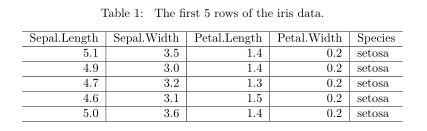

Tables of data
There are several ways to produce tables in Markdown. Here, a couple of different approaches will be presented. The first approach uses the kable function from the knitr package (see also the kableExtra package) and essentially puts a wrapper around the table produced in R in order to make it more visually appealing within the R Markdown document.
Let's say we wanted to create a table of the first 5 rows of the iris data from the datasets library. We can create the table using the kable function as follows:
```{r table}
kable(head(iris, n = 5), caption = '\\label{tab:iris} The first 5 rows of the iris data.')
```This produces the following table in the .pdf document:

Notice that within the caption argument of the kable function there is \\label{tab:iris}. This is how you label tables in order to refer to the within the text. For example,
Table \ref{tab:iris} displays the first 5 rows of the iris data...will produce
Table 1 displays the first 5 rows of the iris data...where, like for sections, the "1" will be a hyperlink directed to the table.
See also the Example Report Markdown file for an example of using the kable_styling function for changing the size and positioning of a table. For example, its often useful to include
kable_styling(font_size = 10, latex_options = 'HOLD_position') as the final term in the "pipe" to control the size of the font used to construct the table and to ensure the table appears at that location in the document (otherwise it may be placed at the bottom or top of the page).
Further information: Additional details on using kable to produce tables can be found here and here.
Tables of summaries
Often we need to report summary statistics of continuous variables either overall or for different subsets using categorical variables.
We can produce overall summaries 'manually' for an individual variable like this:
iris %>%
summarise(n=n(),Mean=round(mean(Sepal.Length),digits=1),
St.Dev=round(sd(Sepal.Length),digits=1),
Min=min(Sepal.Length), Q1 = quantile(Sepal.Length,0.25),
Median=median(Sepal.Length),
Q3 = quantile(Sepal.Length,0.75), Max=max(Sepal.Length)) %>%
kable(caption = '\\label{tab:summaries} Summary statistics
on the sepal length of irises.') %>%
kable_styling(font_size = 10, latex_options = "hold_position")| n | Mean | St.Dev | Min | Q1 | Median | Q3 | Max |
|---|---|---|---|---|---|---|---|
| 150 | 5.8 | 0.8 | 4.3 | 5.1 | 5.8 | 6.4 | 7.9 |
Alternatively, we can use the skim_with() function, in the skimr package, to produce summaries of each varialbe like this:
my_skim <- skim_with(numeric = sfl(hist = NULL),
base = sfl(n = length))
my_skim(iris) %>%
transmute(Variable=skim_variable, n = n, Mean=numeric.mean, SD=numeric.sd,
Min=numeric.p0, Median=numeric.p50, Max=numeric.p100,
IQR = numeric.p75-numeric.p50) %>%
kable(caption = '\\label{tab:summariesskim} Summary statistics
on the sepal length of irises.') %>%
kable_styling(font_size = 10, latex_options = "hold_position")| Variable | n | Mean | SD | Min | Median | Max | IQR |
|---|---|---|---|---|---|---|---|
| Species | 150 | NA | NA | NA | NA | NA | NA |
| Sepal.Length | 150 | 5.843333 | 0.8280661 | 4.3 | 5.80 | 7.9 | 0.60 |
| Sepal.Width | 150 | 3.057333 | 0.4358663 | 2.0 | 3.00 | 4.4 | 0.30 |
| Petal.Length | 150 | 3.758000 | 1.7652982 | 1.0 | 4.35 | 6.9 | 0.75 |
| Petal.Width | 150 | 1.199333 | 0.7622377 | 0.1 | 1.30 | 2.5 | 0.50 |
Further information: Additional details on using the skimr package to produce summaries of variables can be found, in increasing detail, via these links:
- Code Through - skimr,
- Describing data sets and
- Using skimr (vignettes) or a "prettier" version here
We can construct a table of summaries for the sepal length of the different species in the iris data introducing group_by(():
iris %>%
group_by(Species) %>%
summarise(n=n(),Mean=round(mean(Sepal.Length),digits=1),
St.Dev=round(sd(Sepal.Length),digits=1),
Min=min(Sepal.Length), Q1 = quantile(Sepal.Length,0.25),
Median=median(Sepal.Length),
Q3 = quantile(Sepal.Length,0.75), Max=max(Sepal.Length)) %>%
kable(caption = '\\label{tab:summariesby} Summary statistics
on the sepal length by species of irises.') %>%
kable_styling(font_size = 10, latex_options = "hold_position")| Species | n | Mean | St.Dev | Min | Q1 | Median | Q3 | Max |
|---|---|---|---|---|---|---|---|---|
| setosa | 50 | 5.0 | 0.4 | 4.3 | 4.800 | 5.0 | 5.2 | 5.8 |
| versicolor | 50 | 5.9 | 0.5 | 4.9 | 5.600 | 5.9 | 6.3 | 7.0 |
| virginica | 50 | 6.6 | 0.6 | 4.9 | 6.225 | 6.5 | 6.9 | 7.9 |
Alternatively, we can use the skim() function:
my_skim <- skim_with(base = sfl(n = length))
iris %>%
group_by(Species) %>%
select(Sepal.Length,Species) %>%
my_skim() %>%
transmute(Variable=skim_variable, Species=Species, n=n, Mean=numeric.mean, SD=numeric.sd,
Min=numeric.p0, Median=numeric.p50, Max=numeric.p100,
IQR = numeric.p75-numeric.p50) %>%
kable(caption = '\\label{tab:summarybyskim} Summary statistics of the sepal length
by species of irises (produced using skim() function).',
booktabs = TRUE, linesep = "", digits = 2) %>%
kable_styling(font_size = 10, latex_options = "hold_position")| Variable | Species | n | Mean | SD | Min | Median | Max | IQR |
|---|---|---|---|---|---|---|---|---|
| Sepal.Length | setosa | 50 | 5.01 | 0.35 | 4.3 | 5.0 | 5.8 | 0.2 |
| Sepal.Length | versicolor | 50 | 5.94 | 0.52 | 4.9 | 5.9 | 7.0 | 0.4 |
| Sepal.Length | virginica | 50 | 6.59 | 0.64 | 4.9 | 6.5 | 7.9 | 0.4 |
Task
Include a table of summaries of Petal.Width for the different iris species in your document by copying and modifying the above code into Week3DA.Rmd. Knit the .Rmd file and notice what is produced in the Week3DA.pdf file.
Contingency Tables
Often we need to report summary statistics for different combinations of categorical variables' values. For instance, we can classify each iris as having a large or small sepal length and then construct a contingency table of the counts or large and small sepal lengths by the different species in the iris data using:
iris %>%
mutate(sepal.length.class = if_else(Sepal.Length<5.5,'small','large')) %>%
group_by(Species, sepal.length.class) %>%
summarise(n=n()) %>%
spread(sepal.length.class, n) %>%
kable() %>%
kable_styling(font_size = 10, latex_options = "hold_position")| Species | large | small |
|---|---|---|
| setosa | 5 | 45 |
| versicolor | 44 | 6 |
| virginica | 49 | 1 |
We achieve this by including the spread() function, to create columns for each sepal length class, with the count n as the crosstab response value.
One advantage of dplyr is that we can determine what kind of summary statistic we want to see very easily by adjusting our summarize() input.
Here instead of displaying frequencies, we can get the average petal length by species & sepal length class:
iris %>%
mutate(sepal.length.class = if_else(Sepal.Length<5.5,'small','large')) %>%
group_by(Species, sepal.length.class) %>%
summarise(mean_petal.length=mean(Petal.Length))%>%
spread(sepal.length.class, mean_petal.length)%>%
kable(digits = 2) %>%
kable_styling(font_size = 10, latex_options = "hold_position")| Species | large | small |
|---|---|---|
| setosa | 1.42 | 1.47 |
| versicolor | 4.35 | 3.58 |
| virginica | 5.57 | 4.50 |
Lastly, we can find proportions by creating a new, calculated variable dividing row frequency by table frequency.
iris %>%
mutate(sepal.length.class = if_else(Sepal.Length<5.5,'small','large')) %>%
group_by(Species, sepal.length.class) %>%
summarize(n=n())%>%
mutate(prop=n/sum(n))%>% # our new proportion variable
kable(digits = 2) %>%
kable_styling(font_size = 10, latex_options = "hold_position")| Species | sepal.length.class | n | prop |
|---|---|---|---|
| setosa | large | 5 | 0.10 |
| setosa | small | 45 | 0.90 |
| versicolor | large | 44 | 0.88 |
| versicolor | small | 6 | 0.12 |
| virginica | large | 49 | 0.98 |
| virginica | small | 1 | 0.02 |
And we can create a contingency table of proportion values by applying the same spread command as before. Vary the group_by() and spread() arguments to produce proportions of different variables.
iris %>%
mutate(sepal.length.class = if_else(Sepal.Length<5.5,'small','large')) %>%
group_by(Species, sepal.length.class) %>%
summarize(n=n())%>%
mutate(prop=n/sum(n))%>% # our new proportion variable
subset(select=c("Species","sepal.length.class","prop"))%>% #drop the frequency value
spread(sepal.length.class, prop)%>%
kable(digits = 2) %>%
kable_styling(font_size = 10, latex_options = "hold_position")| Species | large | small |
|---|---|---|
| setosa | 0.10 | 0.90 |
| versicolor | 0.88 | 0.12 |
| virginica | 0.98 | 0.02 |
Tables of model estimates
Often we also need to report the results of fitting a model to our data. For instance if we modeled the sepal length on the different species in the iris data by:
\[\widehat{\mbox{Sepal.Length}}(x) = \widehat{\alpha} + \widehat{\beta}_{\mbox{versicolor}} \cdot \mathbb{I}_{\mbox{versicolor}}(x) + \widehat{\beta}_{\mbox{virginica}} \cdot \mathbb{I}_{\mbox{virginica}}(x)\]
Then we could report the estimated values of \(\widehat{\alpha}\), \(\widehat{\beta}_{\mbox{versicolor}}\) and \(\widehat{\beta}_{\mbox{virginica}}\) by constructing the following table:
```{r fittedmodel}
model <- lm(Sepal.Length ~ Species, data = iris)
get_regression_table(model) %>%
dplyr::select(term,estimate) %>%
#Note that it seems necessary to include "dplyr::" here!!
kable(caption = '\\label{tab:reg} Estimates of the parameters from the fitted linear regression model.') %>%
kable_styling(latex_options = 'HOLD_position')
```model <- lm(Sepal.Length ~ Species, data = iris)
get_regression_table(model) %>%
dplyr::select(term,estimate) %>% #Note that it seems necessary to include dplyr:: here!!
kable(caption = '\\label{tab:reg} Estimates of the parameters from the fitted
linear regression model.') %>%
kable_styling(latex_options = 'HOLD_position')| term | estimate |
|---|---|
| intercept | 5.006 |
| Species: versicolor | 0.930 |
| Species: virginica | 1.582 |
Tables 'by hand'
Tables can also be produced "by hand"" in Markdown. For example, the table above corresponding to the first 5 rows of the iris data can be produced by hand by typing the following text (without any other text) into a .Rmd file:
Sepal Length | Sepal Width | Petal Length | Petal Width | Species
:-------------:|:-------------:|:--------------:|:-------------:|---------:
5.1 | 3.5 | 1.4 | 0.2 | setosa
4.9 | 3.0 | 1.4 | 0.2 | setosa
4.7 | 3.2 | 1.3 | 0.2 | setosa
4.6 | 3.1 | 1.5 | 0.2 | setosa
5.0 | 3.6 | 1.4 | 0.2 | setosa
Table: The first 5 rows of the iris data.This produces the following table:
| Sepal Length | Sepal Width | Petal Length | Petal Width | Species |
|---|---|---|---|---|
| 5.1 | 3.5 | 1.4 | 0.2 | setosa |
| 4.9 | 3.0 | 1.4 | 0.2 | setosa |
| 4.7 | 3.2 | 1.3 | 0.2 | setosa |
| 4.6 | 3.1 | 1.5 | 0.2 | setosa |
| 5.0 | 3.6 | 1.4 | 0.2 | setosa |
The vertical separators | are used between columns, while --- is placed below table/column headings. Alignment of the columns is done using colons, that is, for left alignment put :---, for right alignment put ---:, and for centred alignment put :---:.
Tables created by hand can be labelled and referenced to in a similar way to other tables. Having the caption as Table: \label{tab:iris_by_hand}The first 5 rows of the iris data. will automatically label the above table. This can easily be referenced to within the text using \ref{tab:iris_by_hand}.
Further information: Additional details on creating tables by hand can be found here.